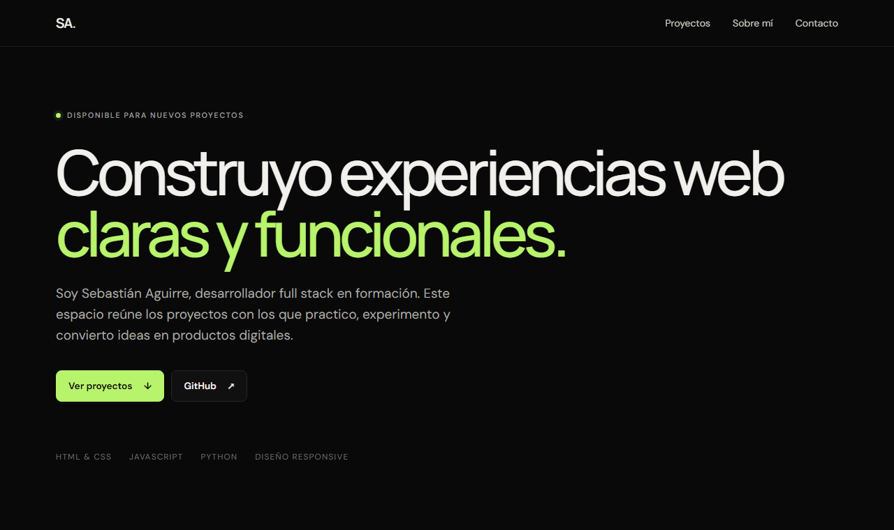

Sitio web profesional
Un centro oficial para contar la historia, presentar al equipo y facilitar el contacto.
- Historia y corredores
- Noticias y calendario
- Patrocinadores y contacto

Imagen profesional para organizaciones deportivas
Sitios web, dossier de patrocinio, identidad visual y herramientas para presentar tu proyecto deportivo ante empresas.

El problema
Muchos equipos cuentan con excelentes deportistas, pero buscan apoyo con documentos improvisados, fotografías dispares, redes desordenadas e información dispersa.
Organizamos todo en una identidad clara y profesional para que patrocinadores, municipios, federaciones y empresas comprendan el valor del proyecto desde el primer contacto.
Servicio integral
Cada servicio puede adaptarse al punto en que se encuentre tu organización y crecer junto con ella.
Un centro oficial para contar la historia, presentar al equipo y facilitar el contacto.
PDF profesional, alineado con la identidad del equipo y listo para enviar a potenciales aliados.
Unificación de la identidad visual del equipo para que todos sus canales comuniquen la misma imagen.
Configuración completa de dominio y correo institucional para una presencia digital más seria.
Coordinación de desarrollo de contenido y gestión de RRSS junto a profesionales especializados.
Coordinación con fotógrafos deportivos profesionales, seleccionados según las necesidades de cada proyecto.
Cómo trabajamos
Conocemos al equipo, sus objetivos y el momento actual del proyecto.
Ordenamos textos, fotografías, logros, calendario y documentación disponible.
Construimos una propuesta coherente con el carácter de la organización.
Presentamos avances, recogemos observaciones y afinamos cada entrega.
Entregamos, configuramos y dejamos al equipo listo para presentar su proyecto.
Caso de éxito · 01
Una solución integral creada para fortalecer la identidad del equipo, ordenar su historia y mejorar su presentación ante nuevos aliados.

Un documento editorial que convierte información deportiva en una propuesta clara para posibles patrocinadores.
Estructura preparada para incorporar nuevos casos de éxito.
Qué recibe el cliente
No solo archivos sueltos: un sistema de presentación conectado, coherente y fácil de usar.
Evaluar mi proyectoPreguntas frecuentes
Diseño y desarrollo web
Conoce otros proyectos web desarrollados por Sebastián, responsable del diseño y desarrollo digital de este servicio.
Desde plataformas educativas hasta sitios corporativos e interactivos, cada proyecto combina identidad visual, contenido claro y una experiencia adaptable a cualquier dispositivo.
Explorar otros proyectos
Hablemos de tu equipo
Cuéntame en qué etapa están y qué necesitan presentar. Revisaremos juntos cuál es el punto de partida más útil.